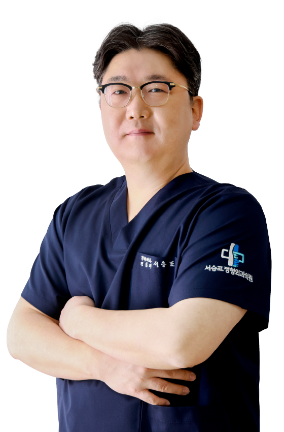

대표원장
서승표
정형외과 전문의
척추관협착증, 추간판질환, 최소침습 시술
척추 측만증, 골다공증
사지 관절 퇴행성 질환의 시술 및 관절경 수술
사지 외상 및 골절의 시술 및 수술
- 20년 이상의 경력과 10만명 이상의 근골격계(척추,사지) 환자를 통한 풍부한 임상경험
- 청평병원 정형외과 주임 과장 역임
- 한양대학교 의료원 외래교수
- 관동대학교 의과대학 임상조교수 역임
- 단국대학교 부속병원 외래교수 역임
- 성애병원 정형외과 척추관절센터 주임과장 역임
- 대한정형외과학회 전공의 지도전문의 (2013~2024)
- 대한정형외과학회 수련 책임전문의 (2019~2024)
- 근로복지공단 산업재해자문 위원 및 장해판정위원
- 2016~2023. 대한척추외과학회 최소침습척추치료연구학회 카데바 워크샵 instructor
- 한양대학교 의과대학 의학과 졸업
- 중앙대학교 대학원 석사 수료
- 한양대학교 병원 인턴 수료
- 한양대학교 병원 정형외과 레지던트 수료
- 한양대학교 병원 정형외과 척추 전임의
- Asia Pacific AO Spine Course 이수
- 1st Yonsei Cervical Spine Hands-On Workshop 이수
- ARC(Annual Reconstruction Conference) 이수
- AO Trauma Course 이수
- 논문 및 학회활동 국내외 합계 60회 이상
-
논문
- The Fate of Neglected Three Column Injuries of the Thoracolumbar Spine, Journal of the Korean Orthopaedic Association
- 봉와직염으로 오인된 아킬레스건 봉합술 후 발생한 아킬레스건 내 결절성 통풍, Journal of the Korean Orthopaedic Association
- Muscular Injury of Iliacus and Gluteus Maximus after Mountain Climbing, The Korean Journal of Sports Medicine
- 경피적 풍선 척추 성형술과 관련된 합병증 및 위험인자, Journal of Advanced Spine Surgery
- Treatment of periprosthetic femoral fracture according to the Vancouver classification, Journal of the Korean Orthopaedic Association
- Traumatic Anterolateral Fracture-Dislocation of the Lumbosacral Spine by Horizontal Shear Force, Journal of the Korean Orthopaedic Association
- Treatment effect with weekly teriparatide in the vertebral compression fractures in patients with severe osteoporosis, Journal of the Korean Orthopaedic Association
- Pseudogout of the Knee after Intraarticular Injection of Hyaluronic Acid, Journal of the Korean Orthopaedic Association
- Femoral Shaft Fracture of a Middle-aged Male Adult during Playing Baseball, The Korean Journal of Sports Medicine
- The Influence of Initial Magnetic Resonance Imaging Findings on the Compression Rate of Thoracolumbar Osteoporotic Vertebral Compression Fracture, Journal of the Korean Orthopaedic Association
- Brown-Séquard Syndrome and Cervical Vertebral Fractures after Blunt Cervical Trauma in a Traffic Accident: A Case Report, Journal of Korean Society of Spine Surgery
- 영상증폭기하에서 직접적 바늘 흡인술로 치료한 요추 후관절 주위 낭종, Journal of the Korean Orthopaedic Association
- An Analysis of Patients with Single and Combined Pyogenic Spinal Infections, Journal of the Korean Orthopaedic Association
- Leiomyosarcoma Mimicking Superficial Cystic Soft Tissue Mass Confusing Diagnosis On Ultrasonography-A Case Report, The Journal of Korean Orthopaedic Ultrasound Society
- Surgical Outcome of Tuberculous Myelitis, Arachnoiditis and Spondylitis after Brain Meningitis: A Case Report, Journal of Korean Society of Spine Surgery
- Old and New Fashion: Luque 지지대와 추궁하 철사 고정술 및 후외방 유합술 후상위 인접 분절 척추관 협착증의 최소 침습법을 이용한 수술적 치료, 대한척추외과학회지
- 항정신병 약물 과량 복용 후 발생한 횡문근융해증으로 인한 급성 구획증후군, Journal of the Korean Orthopaedic Association
- Video-Assisted Thoracoscopic Minimally Invasive Anterior Interbody Fusion of the T11-T12 Level Using Direct Lateral Interbody Fusion Devices-A Case Report, Journal of Korean Society of Spine Surgery
- 경한 둔상에 의하여 발생한 경골 동맥의 경골비골동체의 가성동맥류, Journal of the Korean Orthopaedic Association
- Cauda Equina Syndrome Occurred by Adhesive Arachnoiditis of the Lumbar Spine with an Unknown Cause, Journal of the Korean Orthopaedic Association
- Septic Arthritis after Arthroscopic Meniscal Repair, Journal of the Korean Orthopaedic Association
- Cauda Equine Syndrome Induced by Spinal Epidural Hematoma due to a Low-Energy Osteoporotic Vertebral Fracture, Journal of the Korean Orthopaedic Association
- 폐경 후 골다공증성 압박 골절의 치료에서 경피적 척추체 풍선 성형술 후 주 단위 테리파라타이드 투여의 효과, Journal of the Korean Orthopaedic Association
- Surgical treatment of the myositis ossificans in supracondylar fracture of the humerus in children: a case report, Journal of the Korean Fracture Societys
- 젊은 여성에서 임신 및 수유와 연관된 골다공증성 척추 압박골절, Journal of the Korean Orthopaedic Association
- Analysis of treatment results of unstable distal clavicle fractures using hook plate, Journal of the Korean Orthopaedic Association
- Height restoration after balloon kyphoplasty in rheumatoid patients with osteoporotic vertebral compression fracture, Asian Spine Journal
- Outcomes of revision surgery following instrumented posterolateral fusion in degenerative lumbar spinal stenosis: a comparative analysis between pseudarthrosis and adjacent segment disease, Asian Spine Journal
- Minimally Invasive Spine Surgery versus Open Posterior Instrumentation Surgery for Unstable Thoracolumbar Burst Fracture, Asian Spine Journal
- Anterior operation for unstable thoracolumbar and lumbar burst fractures: tricortical autogenous iliac bone versus titanium mesh cage, Clinical Spine Surgery
- 최소 침습 기법을 이용한 요추 재수술 방법, Journal of Korean Society of Spine Surgery
학회활동- Surgical treatment of tuberculous myelitis and arachnoiditis combined with spondylitis, PASMISS-X’ian, China, 2012
- Anterior Operation for Unstable Thoracolumbar and Lumbar Burst Fractures: Tricortical Autogenous Iliac Bone vs Titanium Mesh Cage, 대한정형외과학회, 2012
- Anterior Operation for Unstable Thoracolumbar and Lumbar Burst Fractures: Tricortical Autogenous Iliac Bone vs Titanium Mesh Cage, 대한정형외과학회, 2012
- Postural reduction and posterior fixation(MIS) at very severe OVCF Pt., K-MISS, 2017
- Postural Reduction and Stabilization with Minimal Invasive Technique in Severe Osteoporotic Vertebral Compression Fracture Patient, PASMISS-Sapporo, Japan, 2017
- Epidural cyst treated with C-arm guided percutaneous needle aspiration, K-MISS, 2018
- Cauda Equina Syndrome due to Spontaneous adhesive arachnoiditis, K-MISS, 2018
- Cauda Equina Syndrome Occurred by Adhesive Arachnoiditis of Lumbar Spine with Unknown Cause, PASMISS-Taiwan, 2018
- Complications Related to Balloon Kyphoplasty, K-MISS, 2019
- Lumbar juxtafacet cyst treated with aspiration under the guidance of image intensifier, PASMISS-Suzhou, China, 2019
- Pre-emptive analgesia : Is it effective in Spinal Surgery?, 대한척추외과학회 추계학술대회, 2019
- 영상증폭기 하에서 천자로 치료한 요추 후관절 주위 낭종, 척추통증연구학회 동계심포지움, 2019
- 2020 PASMISS 준비,운영위원회 및 complications related to spinal surgery 프로그램 좌장.
- Severely Collapsed Osteoporotic Compression Fracture Treated with Postural Reduction following Minimally Invasive Transpedicular Fixation and Posterolateral Fusion with rhBMP-2 using same Incisions, 2020, 대한정형외과학회
- Cervical facet joint syndrome, 대한척추외과학회 추계학술대회, 2020
- 수핵성형술, 척추통증연구학회 춘계심포지움, 2021
- Indication and technique of nucleoplasty, 대한척추외과학회 추계학술대회, 2021
- Sacrococcygeal Bursal Cyst Mimicking a Pilonidal Cyst, 대한정형외과학회, 2021
- Severely Collapsed Osteoporotic Compression Fracture Treated with Postural Reduction following Minimally Invasive Transpedicular Fixation and Posterolateral Fusion with rhBMP-2 using same Incisions, 대한정형외과학회, 2021
- Tubular Retractor를 이용한 revision surgery, K-MISS, 2022
- Minimal Invasive Spine Surgery technique in Revision Surgery - Application with tubular retractor, KSSS, 2022
- Technical Tip and Pitfall of conservative treatment, MISS, 2022
- Brain complications after spinal procedures, K-MISS, 2023
- 척추 시술 후 발생할 수 있는 뇌 합병증, 대한척추외과학회 추계학술대회, 2023
- Brain complications after spinal procedures 척추통증연구학회 동계심포지움, 2023
- 척추 시술 방법에 대하여, 대한정형통증학회 연수강좌, 2024
- 2016~2023. 대한척추외과학회 최소침습척추치료연구학회 카데바 워크샵 instructor
원장
은채령
내과 전문의
- 내과 전문의 취득
- 내분비내과 분과전문의
- 고려대학교 안산병원 내분비내과 임상교수
- 당뇨병 교육자 인정의
- 임상초음파 인정의
- 메트로내과의원 부원장 역임
- 고려대학교 의과대학 의학과 졸업
- 고려대학교 의료원 인턴 수료
- 고려대학교 의료원 내과 레지던트 수료
- 고려대학교 대학원 의학석사
- 고려대학교 대학원 의학박사
- 대한내과학회 평생회원
- 대한내분비학회 평생회원
- 대한당뇨병학회 평생회원
- 대한갑상선학회 평생회원
- 대한임상초음파학회 평생회원